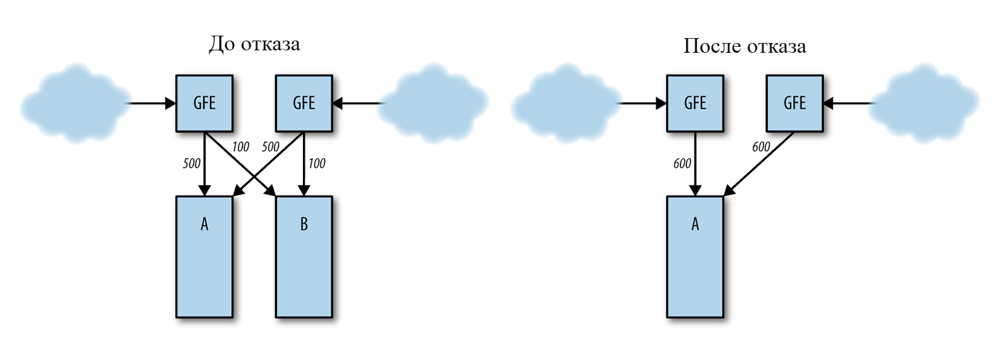
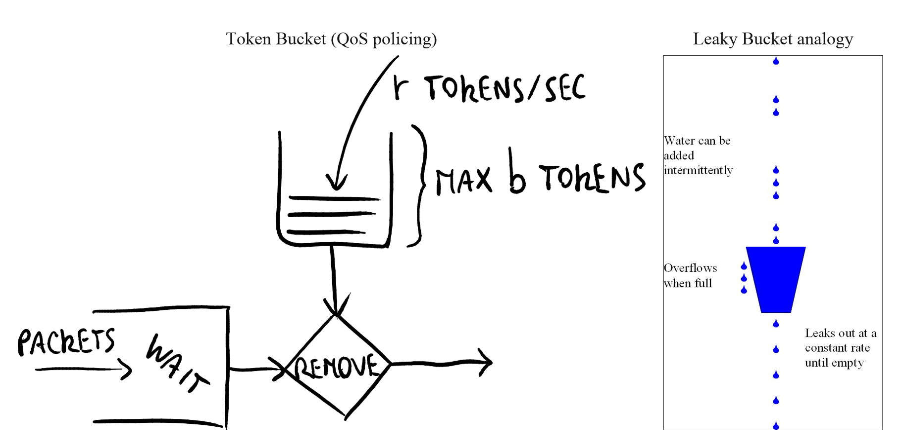
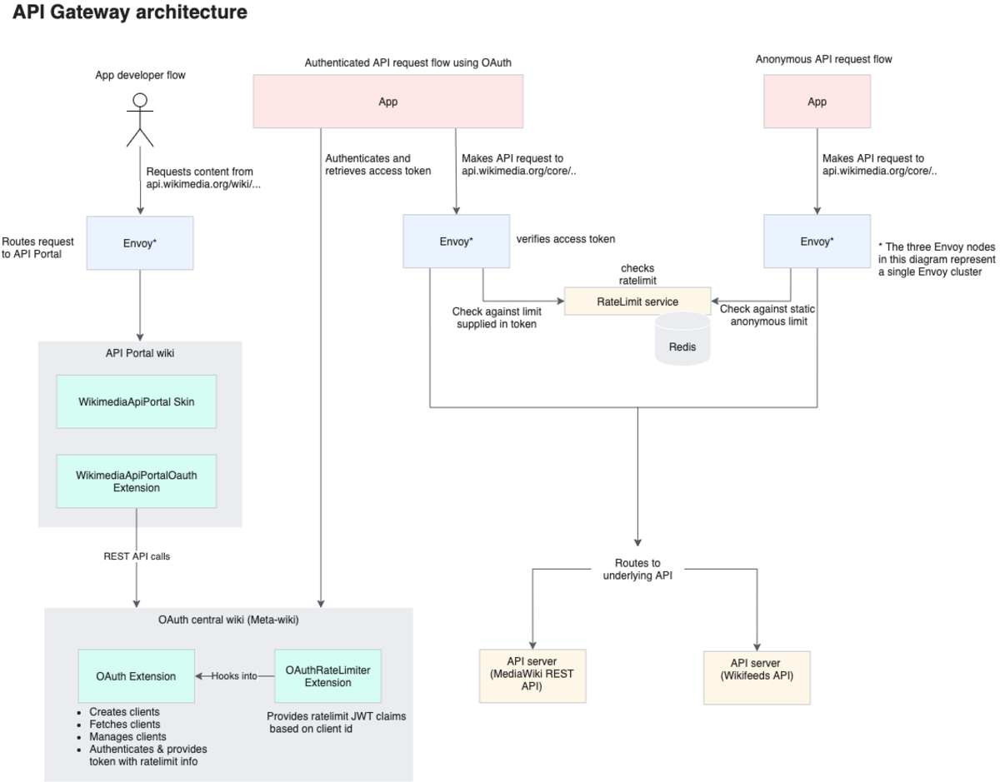
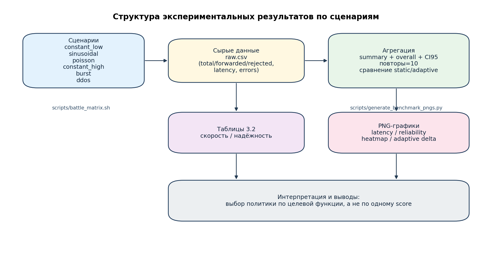
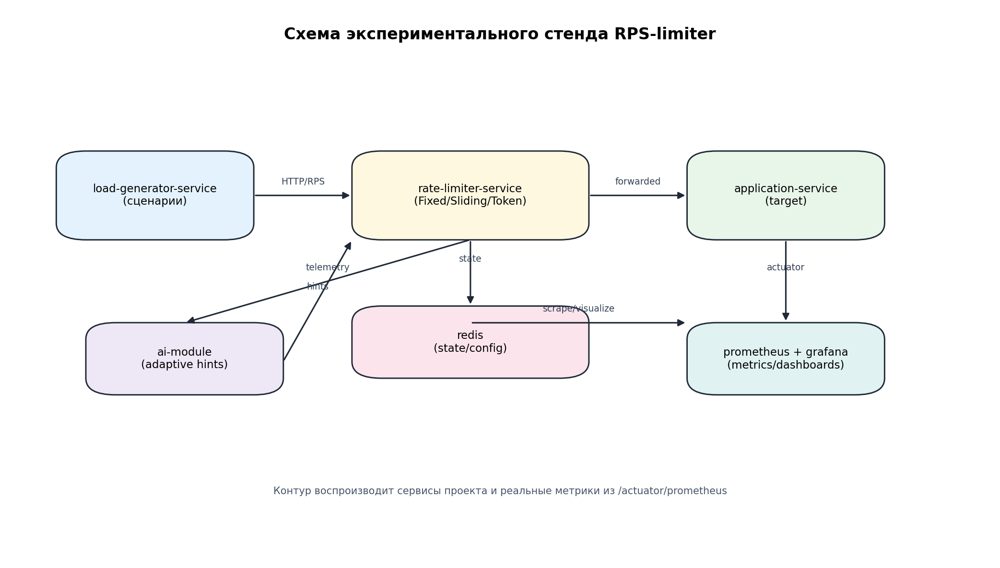
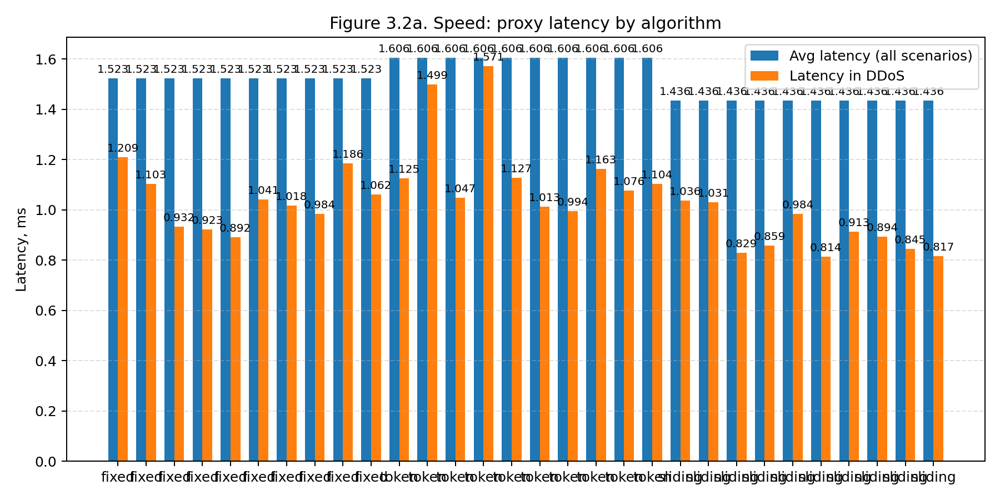
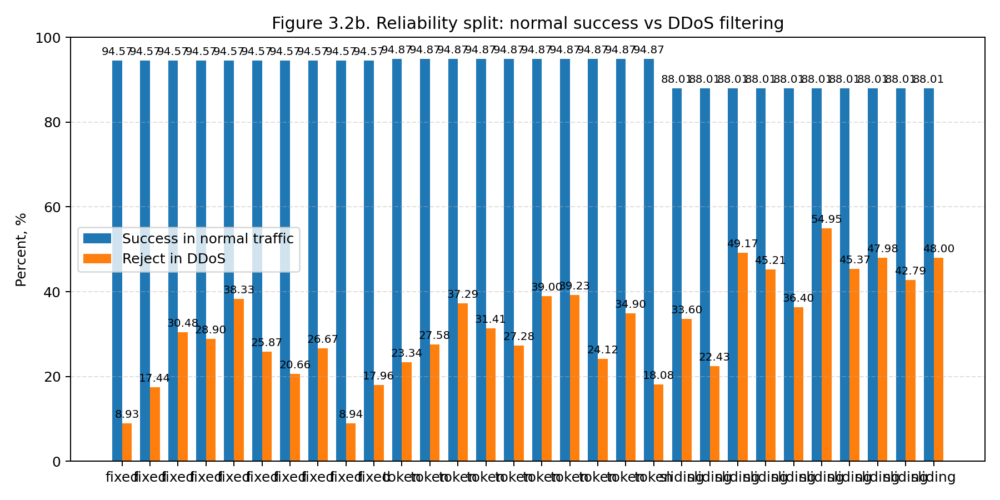
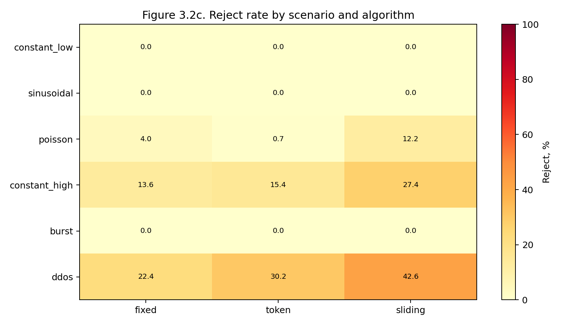
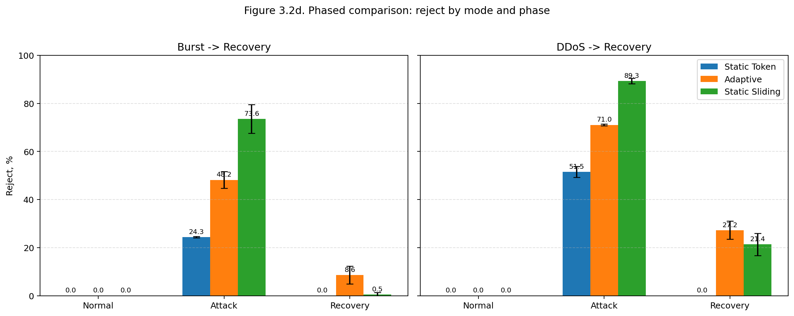
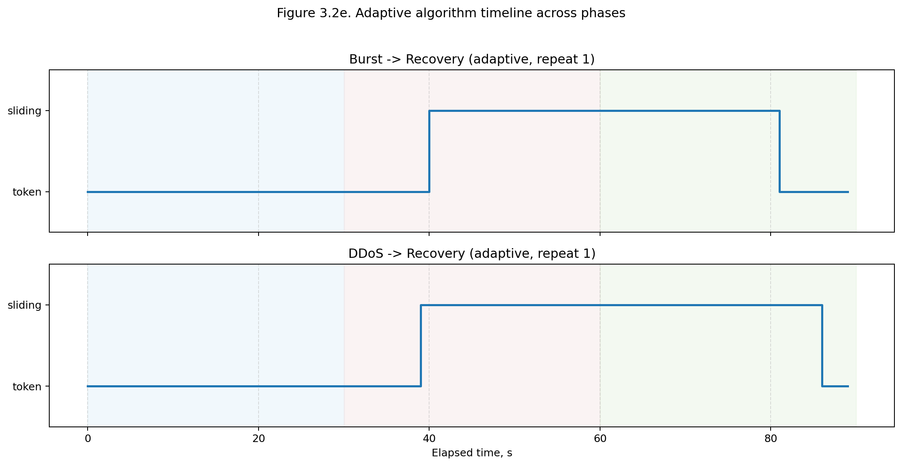

Тема: Адаптивное управление нагрузкой в распределенной среде на основе интеллектуального анализа трафика
СОДЕРЖАНИЕ
Оглавление будет сформировано в Word после обновления поля (F9).
ТЕРМИНЫ И ОПРЕДЕЛЕНИЯ
Адаптивное лимитирование – режим управления ограничениями частоты запросов, при котором параметры алгоритма изменяются в зависимости от наблюдаемого профиля нагрузки
Каскадный отказ – последовательная деградация взаимосвязанных компонентов распределённой системы вследствие локального сбоя или перегрузки
Легитимный трафик – поток запросов от добросовестных пользователей и интеграций, не направленный на нарушение доступности сервиса
Распределённый лимитер – механизм ограничения запросов, работающий в многосервисной или многоузловой среде с разделяемым состоянием
Сценарий нагрузки – формализованный профиль входящего трафика, используемый для воспроизводимого тестирования устойчивости системы
Устойчивость системы – способность информационной системы сохранять работоспособность при отклонениях нагрузки и частичных отказах компонентов
ПЕРЕЧЕНЬ СОКРАЩЕНИЙ И УСЛОВНЫХ ОБОЗНАЧЕНИЙ
API – Application Programming Interface, программный интерфейс приложения
CI95 – 95% доверительный интервал
DDoS – Distributed Denial of Service, распределённая атака отказа в обслуживании
HTTP – HyperText Transfer Protocol
KPI – Key Performance Indicator, ключевой показатель эффективности
ML – Machine Learning, машинное обучение
RPS – Requests Per Second, количество запросов в секунду
SLA – Service Level Agreement, соглашение об уровне сервиса
SLO – Service Level Objective, целевой показатель уровня сервиса
UX – User Experience, пользовательский опыт
ВВЕДЕНИЕ
Актуальность исследования определяется тем, что цифровые сервисы стали критической инфраструктурой для повседневной жизни людей и бизнеса.
Недоступность программных интерфейсов приложений (API) сегодня означает не только технический сбой, но и прямые потери: остановку платежей, срыв логистики, деградацию медицинских, образовательных и государственных сервисов.
По данным облачных операторов, число и интенсивность распределённых атак отказа в обслуживании (DDoS) продолжили расти в 2025 году, включая гиперобъёмные атаки в диапазонах Tbps и сотен миллионов запросов в секунду [1] [2].
Следовательно, задача ограничения запросов выходит за пределы «оптимизации производительности» и становится задачей общественной полезности: обеспечивать доступность цифровых услуг для добросовестных пользователей даже в условиях аномалий.
В качестве эксплуатационных ориентиров в работе используются соглашение об уровне сервиса (SLA), целевой показатель уровня сервиса (SLO) и интервальная оценка разброса результатов через 95% доверительный интервал (CI95).
Классические алгоритмы rate limiting известны и широко применяются, но в реальных распределённых системах они сталкиваются с компромиссами между точностью, доступностью и задержками [3] [4] [5].
В промышленной практике это проявляется как «best-effort» лимитирование: ограничения работают эффективно, но не абсолютно детерминированно в каждом узле и в каждый момент времени [3] [4].
Поэтому важна не только корректная реализация конкретного алгоритма, но и архитектурная стратегия: как сочетать алгоритмы, где размещать контроль, как реагировать на смену профиля трафика.
Проблема особенно обостряется для сервисов с высокой социальной нагрузкой:
финтех, e-commerce, логистика, образование, государственные цифровые порталы.
В таких системах инцидент доступности затрагивает не только технические метрики, но и реальные действия пользователей: оплату, заказ, получение услуги, подтверждение операций.
Поэтому в работе используется прикладной критерий полезности: насколько решение позволяет сохранить доступ для добросовестного трафика в период перегрузки.
С практической стороны выделяются три типовые ошибки эксплуатации:
1. Отсутствие лимитов как класса до возникновения инцидента.
2. Чрезмерно жёсткие статические лимиты, ухудшающие UX в штатных пиках.
3. Несогласованность между слоями (gateway и сервисы применяют конфликтующие правила).
Предлагаемый в работе подход ориентирован на устранение именно этих ошибок: вводится комбинированная политика, где базовый режим оптимизирует доступность, а защитный режим активируется при аномалиях.
Степень разработанности темы.
Проблематика ограничения частоты запросов в распределённых системах является достаточно разработанной в научной и инженерной литературе: описаны базовые алгоритмы (Fixed Window, Sliding Window, Token Bucket, Leaky Bucket), а также подходы к их реализации в платформенных решениях и API-шлюзах [3] [4] [5].
При этом в опубликованных материалах преобладают либо теоретические сопоставления алгоритмов, либо vendor-специфичные рекомендации по эксплуатации.
В существенно меньшей степени представлены воспроизводимые сравнительные исследования, в которых единообразно оцениваются скорость, доступность легитимного трафика и устойчивость в аномальных сценариях на одном стенде.
Решаемая проблема.
Несмотря на наличие развитого набора алгоритмов и инструментов, в практической эксплуатации сохраняется проблема выбора и настройки политики лимитирования для переменного трафика:
статические лимиты часто оказываются либо избыточно жёсткими в штатных режимах, либо недостаточно эффективными при аномальной нагрузке.
В рамках работы решается проблема построения воспроизводимого подхода к адаптивному управлению ограничениями частоты запросов в секунду (RPS), который обеспечивает обоснованный баланс между доступностью, защитой и задержкой на основе измеримых метрик.
Объект исследования: распределённые информационные системы с публичными и внутренними API.
Предмет исследования: алгоритмы и архитектуры ограничения частоты запросов (RPS-limiting) в условиях переменной и аномальной нагрузки.
Цель работы: разработать и экспериментально обосновать адаптивный подход к ограничению частоты запросов, повышающий устойчивость и защищённость распределённой системы по сравнению со статической конфигурацией лимитов.
Для достижения цели поставлены следующие задачи:
1. Анализ проблем устойчивости и защищенности распределенных систем при высоких нагрузках и DDoS-подобных сценариях.
2. Сравнительный анализ алгоритмов ограничения частоты запросов (Fixed Window, Sliding Window, Token Bucket) по точности, адаптивности, сложности и применимости в распределенной среде.
3. Проектирование архитектуры экспериментального прототипа (Service A — генератор нагрузки, Service C — прокси-лимитер, Service B — целевой сервис, Redis, Prometheus/Grafana).
4. Реализация распределенного механизма RPS-лимитирования в сервисе C с хранением состояния в Redis, поддержкой переключения алгоритмов и режима отказоустойчивости fail-open.
5. Интеграция внешнего интеллектуального аналитического компонента для адаптивной настройки лимитов на основе телеметрии и прогноза нагрузки (без разработки собственной ML-модели).
6. Проведение экспериментов в сценариях: равномерная нагрузка, кратковременные всплески, аномальная/злоупотребляющая нагрузка, отказ Redis.
7. Оценка результатов по метрикам: время отклика, доля отклоненных запросов (429), устойчивость при пиках, уровень защиты от перегрузок.
8. Формулирование практических рекомендаций по выбору алгоритма и параметров лимитирования для публичных API распределенных систем.
Методы исследования: системный анализ, архитектурное моделирование, сравнительный эксперимент, статистический анализ метрик, инженерная интерпретация результатов.
Практическая значимость работы состоит в том, что предложенный подход ориентирован на эксплуатацию в реальных командах:
1. Позволяет уменьшать вероятность массовой недоступности пользовательских сервисов.
2. Снижает риск ресурсного истощения и «лавины ретраев» в микросервисах.
3. Даёт воспроизводимую методику выбора алгоритма под конкретный профиль нагрузки.
4. Поддерживает поэтапное внедрение без переписывания всей платформы.
Научно-практическая новизна работы заключается не в создании нового алгоритма лимитирования, а в подтверждении эксплуатационной гипотезы:
на реальном проектном стенде адаптивная композиция алгоритмов и параметров демонстрирует более устойчивые результаты по сравнению со статической политикой.
Данный вывод принципиален для производственных команд, поскольку снижает стоимость внедрения:
возможно использование существующих алгоритмов с добавлением слоя аналитических рекомендаций и контролируемых переключений.
Ключевое ограничение и одновременно инженерная позиция работы:
внешний интеллектуальный компонент используется как аналитический советник для прогнозирования нагрузки и рекомендации параметров, но в рамках исследования не разрабатываются и не обучаются собственные модели искусственного интеллекта [6].
Структура работы включает три главы.
Перед введением приведены структурные элементы «Термины и определения» и «Перечень сокращений и условных обозначений».
В первой главе обоснована практическая необходимость управления нагрузкой и безопасности API.
Во второй главе систематизированы алгоритмические и архитектурные решения.
В третьей главе приведены методика эксперимента, результаты и выводы по адаптивному подходу.
Ожидаемый прикладной результат работы — методическая основа для настройки RPS-лимитирования в реальной системе:
1. Понять, какой режим является базовым для штатного трафика.
2. Определить, когда и как включать усиленную защиту.
3. Формализовать критерии успешности через метрики скорости и надёжности.
4. Зафиксировать границы и условия безопасной адаптации.
Тем самым работа ориентирована на непосредственное использование в инженерной практике, а не только на теоретическое описание алгоритмов.
Глава 1. Теоретические основы устойчивости и защищённости распределённых информационных систем
1.1. Проблемы устойчивости и защищённости распределённых систем при высоконагруженном взаимодействии сервисов
В распределённой архитектуре отказ одного элемента редко остаётся локальным событием.
Если часть кластера теряет доступность, трафик перераспределяется на оставшиеся узлы, и при недостаточном запасе ёмкости система переходит в режим каскадной деградации [7].
С инженерной точки зрения это означает, что устойчивость должна проектироваться не для «среднего» режима, а для режима отклонений, когда одновременно растут нагрузка, задержка и количество повторов.
Типовой сценарий каскадной деградации в распределённой системе показан на рисунке 1.
Рисунок 1 – Каскадный отказ в распределённой системе

Каскадные отказы усиливаются положительной обратной связью: рост задержки провоцирует повторные запросы, повторы увеличивают очередь, очередь ещё сильнее увеличивает задержку [7].
При этом ресурсы заканчиваются не только по CPU, но и по потокам, соединениям, памяти и сетевым буферам.
Даже если система потом возвращается в норму, окно деградации может быть достаточно долгим, чтобы пользователи массово потеряли доступ к сервису, а SLA был нарушен на протяжении целого операционного интервала.
Для прикладного анализа удобно разделять источники перегрузки на три группы:
1. Внешний злонамеренный трафик (боты, DDoS, сканирование API).
2. Внешний легитимный пик (маркетинговая кампания, релиз, сезонный всплеск).
3. Внутренне индуцированная перегрузка (ретрай-шторм, ошибочная интеграция, некорректный polling-клиент).
Такая классификация важна для диссертационной задачи, потому что разные группы требуют разных режимов лимитирования.
Например, при легитимном пике приоритетом является сохранение доступности для максимальной доли добросовестных запросов, а при атаке приоритет смещается в сторону жёсткой фильтрации.
Единая статическая политика «один лимит на все случаи» в данной постановке, как правило, уступает адаптивной.
Отдельную категорию риска формируют DDoS и ботнет-кампании.
Публичные отчёты Cloudflare за 2025 год фиксируют резкий рост числа атак, в том числе гиперобъёмных, и подтверждают, что атаки становятся не только масштабнее, но и более автоматизированными [1] [2].
Для прикладных сервисов это означает, что защита должна быть постоянной функцией архитектуры, а не временной «надстройкой» на период инцидента.
Исторически показательным остаётся класс атак через memcached amplification.
Этот вектор демонстрирует, как небольшие входные пакеты могут формировать несоразмерно большой отражённый трафик; фактор усиления может быть очень высоким [8].
Уязвимость класса uncontrolled resource consumption для данного сценария зафиксирована и в NVD (CVE-2018-1000115) [9].
Практический вывод для публичных API состоит в том, что защита должна ограничивать не только «объём в секунду», но и скорость потребления критичных операций на уровне ключа клиента, маршрута и метода.
Кроме атак, существенную долю инцидентов формируют «легитимные» всплески: маркетинговые акции, релизы, массовые push-уведомления, неудачные клиентские ретраи.
С точки зрения пользователя причины не важны: результат один и тот же, если API недоступен.
Следовательно, критерий качества решения должен оцениваться через общественно значимый эффект: сохраняется ли доступность сервиса для добросовестного клиента в пике и насколько предсказуемо происходит деградация.
На практике полезно оценивать не только факт инцидента, но и его человеческую стоимость:
1. Потеря доступа к базовым действиям (авторизация, платёж, обращение в поддержку).
2. Потеря доверия к сервису из-за непредсказуемых отказов.
3. Вторичный ущерб от «цепочки зависимостей», когда недоступность одного API блокирует несколько пользовательских сценариев сразу.
Информационная безопасность в такой постановке включает не только конфиденциальность и целостность, но и доступность.
Это согласуется с современными стандартами и практиками управления рисками [10] [11].
Если API не отвечает, пользователь теряет услугу; значит, отказоустойчивость является не вспомогательной, а базовой частью кибербезопасности.
Дополнительно следует учитывать эксплуатационный аспект: даже кратковременная деградация может вызвать лавину повторов со стороны мобильных клиентов и внешних интеграторов.
Поэтому архитектура защиты должна предполагать корректное поведение клиента в условиях ограничения, включая коды 429, задержки повторов и прогнозируемое восстановление квот [12].
Без этого система теряет управляемость: перегрузка возвращается повторно уже после первичного пика.
Сводная связь угроз и эффекта для пользователей представлена в таблице 1.
Таблица 1 – Источники перегрузки и прикладные последствия.
Источник | Типичный механизм деградации | Риск для пользователя | Приоритетный контрмеханизм |
DDoS/бот-трафик | Резкий рост входящего RPS, истощение ресурсов | Недоступность API, рост ошибок | Жёсткое лимитирование, фильтрация по ключам/маршрутам |
Легитимный пик | Очереди и рост latency в пиковые интервалы | Замедление операций, таймауты | Мягкий допуск с контролем burst, адаптация порогов |
Retry-шторм | Положительная обратная связь «ошибка -> ретрай» | Длительное окно нестабильности | 429 + Retry-After + ограничение частоты повторов |
Для проектирования устойчивости важно формализовать целевые KPI, а не ограничиваться общим тезисом «сервис должен держать нагрузку».
В прикладной постановке целесообразно контролировать:
1. Долю успешных ответов в штатном профиле (целевой порог, например, не ниже 95%).
2. Долю отказов 5xx на защищаемом сервисе в аномальном профиле.
3. Время восстановления после пика (в секундах до возврата к штатной латентности).
4. Долю ложных отклонений, то есть 429 для трафика, который не является вредоносным.
При отсутствии указанных показателей невозможно обосновать, что выбранная стратегия обеспечивает требуемый эффект для пользователей и бизнеса.
При этом устойчивость должна оцениваться в горизонте полного инцидента, а не в одном коротком срезе.
Сервис может демонстрировать приемлемое состояние в начале пика, но деградировать через несколько минут из-за накопления очередей и повторов.
Поэтому в методике эксперимента (глава 3) акцент сделан на повторные прогоны и анализ разброса, чтобы не принимать решение по случайному удачному прогону.
Вывод по разделу 1.1.
Подход, который одновременно учитывает перегрузки, атакующий трафик и поведение легитимных клиентов, эффективнее узконаправленной защиты «только от DDoS».
Он обеспечивает более устойчивый пользовательский опыт: не только блокирование избыточного трафика, но и сохранение работы системы в пределах контролируемого качества.
Практическая значимость темы заключается в том, что защищается не абстрактная инфраструктура, а доступ пользователей к цифровой услуге в нестабильных режимах.
1.2. Роль ограничения частоты запросов как механизма обеспечения отказоустойчивости и предотвращения перегрузок
Ограничение частоты запросов (rate limiting) выполняет роль контролируемого предохранителя.
Когда входящий поток превышает проектные параметры системы, лимитер переводит часть запросов в отклонение, предотвращая разрушение всего сервиса [13].
Такой режим предпочтительнее полной недоступности, поскольку сохраняет частичную работоспособность для значимой доли пользователей.
С инженерной позиции лимитирование реализует back-pressure на уровне API.
Система не должна принимать неограниченный поток и обрабатывать его без ограничения; корректная стратегия предполагает ограничение входа до уровня, совместимого с текущей пропускной способностью.
Именно это превращает перегрузку из аварии в управляемый режим деградации.
В распределённых сервисах такой режим часто является единственным способом удержать ядро бизнес-операций в рабочем состоянии.
На уровне HTTP общепринятой реакцией является код 429 Too Many Requests, формализованный в RFC 6585 [12].
Рекомендация возвращать Retry-After помогает клиентам корректно строить backoff-логику и снижает вероятность ретрай-штормов [12].
Это превращает лимитирование из «молчаливого отказа» в управляемый протокол взаимодействия клиента и сервера.
Практически важно, что 429 является не «ошибкой приложения», а частью контрактной политики API.
Клиент, который корректно обрабатывает 429 и уважает Retry-After, повышает устойчивость всей экосистемы.
Клиент, который игнорирует эти сигналы и продолжает агрессивные повторы, становится источником вторичной перегрузки.
Следовательно, полезность лимитирования усиливается в связке с требованиями к клиентским SDK и интеграционным регламентам.
В управляемых API-платформах лимитирование закреплено как штатный механизм.
AWS API Gateway использует token bucket и прямо указывает, что лимиты применяются в режиме best-effort [3] [14].
Azure API Management также подчёркивает, что в распределённой архитектуре точность лимита не может быть абсолютно строгой в каждый момент времени [4].
Эта оговорка критична для корректной инженерной интерпретации результатов.
В контексте эксплуатации это означает следующее:
1. Лимит задаёт рабочий диапазон, а не математически мгновенную гарантию.
2. Краткие отклонения допустимы, если не приводят к системной деградации.
3. Решение оценивается по интегральному эффекту (доступность, latency, доля 429), а не по единичному «проскочившему» запросу.
Практика крупных API-провайдеров показывает, что лимиты нужны не только для безопасности, но и для справедливого распределения ресурсов между клиентами.
Cloudflare документирует глобальные API-лимиты и возврат 429 при превышении [15].
GitHub публикует разные квоты для аутентифицированных и неаутентифицированных запросов, тем самым выравнивая нагрузку и снижая риск злоупотреблений [16].
Здесь проявляется важный социально-прикладной аспект: лимитирование защищает не только инфраструктуру владельца API, но и добросовестных клиентов.
Если один агрессивный клиент без ограничений занимает большую часть ресурса, остальные пользователи фактически лишаются услуги.
Механизм квот и ограничений восстанавливает предсказуемую справедливость доступа, что особенно важно для публичных и партнёрских API.
Для конечных пользователей это выражается в управляемом режиме деградации сервиса вместо полного отказа.
Для операторов это даёт предсказуемость: видны лимиты, понятны окна, можно анализировать долю отклонений как нормальный операционный сигнал.
Для бизнеса это уменьшает вероятность каскадного простоя и неконтролируемого роста инфраструктурных затрат.
В multi-tenant системах ограничение частоты запросов также выступает инструментом экономической защиты.
Оно предотвращает ситуацию, когда одна интеграция или один tenant резко увеличивает потребление и вынуждает масштабировать всю платформу в аварийном режиме.
Таким образом, rate limiting связывает техническую и финансовую устойчивость: чем точнее настроены лимиты, тем ниже риск «экономического DoS» через легитимный, но неконтролируемый трафик.
Лимитирование не является единственным инструментом и не заменяет WAF, мониторинг, авторизацию или кэширование.
Его сила в том, что оно работает как первый рубеж управления скоростью потребления ресурсов.
Именно этот рубеж предотвращает переход от локального всплеска к системному инциденту.
На практике оправдана многоуровневая политика:
1. Глобальный лимит на уровне gateway (грубая отсечка).
2. Лимит по клиенту/ключу (справедливость между потребителями).
3. Лимит по endpoint или категории операций (защита критичных маршрутов).
4. Более строгий профиль при признаках атаки и более мягкий профиль в штатном режиме.
Прикладной эффект лимитирования для разных участников приведён в таблице 2.
Таблица 2 – Прикладной эффект лимитирования для разных участников.
Участник | Что получает без лимитирования | Что получает при корректном лимитировании |
Конечный пользователь | Риск полного отказа сервиса в пике | Сохранение частичной доступности и предсказуемое поведение API |
Оператор платформы | Непредсказуемый рост инцидентов и алертов | Управляемые метрики 429/latency и понятные режимы реагирования |
Бизнес-заказчик | Простои и перерасход инфраструктуры | Контролируемый уровень качества и затрат |
Отдельно следует учитывать, что лимитирование требует калибровки, иначе оно превращается в источник ложных отказов.
Практический процесс калибровки включает:
1. Сбор базовой телеметрии по маршрутам в нормальном режиме.
2. Выбор стартовых лимитов с запасом относительно медианного трафика.
3. Контроль p95/p99 latency и доли 429 после включения ограничений.
4. Итеративную корректировку порогов по результатам наблюдения.
Такой подход предпочтительнее «разового выбора» лимита, поскольку учитывает реальное распределение нагрузки, а не экспертную оценку без эмпирической верификации.
Для публичных API также важно документировать политику лимитов для внешних интеграторов.
Наличие прозрачных квот и ожидаемого поведения при превышении снижает количество инцидентов, вызванных некорректной клиентской логикой.
Таким образом, лимитирование является одновременно техническим и договорным механизмом устойчивости.
Вывод по разделу 1.2.
По сравнению с политикой «обслуживать весь входящий поток без ограничений», управляемое ограничение запросов эффективнее сохраняет полезную производительность.
Это повышает общественную полезность сервиса: в критической ситуации больше пользователей получают ответ, пусть и при частичных ограничениях.
В связке со сценарно-зависимыми настройками (штатный/аномальный режим) такой подход даёт лучший баланс между доступностью и защитой, чем единый фиксированный порог.
1.3. Особенности обеспечения устойчивости и защищённости публичных API в распределённых системах
Публичный API является одновременно точкой роста интеграций и точкой роста поверхности атаки.
Чем проще внешнему клиенту подключиться, тем выше требования к контролю потребления ресурсов и авторизации.
Поэтому зрелый API-дизайн сочетает удобство интеграции и строгие эксплуатационные границы.
В отличие от внутренних сервисных интерфейсов, публичный API работает в условиях неполного доверия к клиенту.
Провайдер не контролирует ни сетевой контур клиента, ни его retry-логику, ни частоту вызовов.
Следовательно, устойчивость публичного API должна быть встроенной характеристикой: политика допуска, лимиты, валидация входа и наблюдаемость должны задаваться уже на этапе проектирования контракта.
Фундаментом предсказуемости интерфейса выступает стандартизованное описание API.
OpenAPI задаёт язык, на котором команда и клиенты одинаково понимают контракты, форматы и ошибки [17].
Чем прозрачнее контракт, тем меньше «шумовых» запросов из-за неверной интеграции и тем ниже вероятность случайной перегрузки.
Практический эффект стандартизованного контракта состоит в снижении непреднамеренного шумового трафика:
1. Клиенты корректнее формируют запросы и обрабатывают ошибки.
2. Уменьшается число лишних повторов из-за неправильной трактовки ответов.
3. Снижается доля случайных пиков, вызванных дефектами интеграции.
Следовательно, качество контракта напрямую связано с качеством нагрузочного профиля API.
На уровне идентификации и делегирования доступа индустриальным стандартом остаётся OAuth 2.0 [18].
В контексте устойчивости это важно, потому что корректная аутентификация и модель scope-ов позволяют ограничивать не только скорость, но и объём доступных операций для каждого класса клиентов.
Иными словами, безопасность и отказоустойчивость здесь взаимосвязаны:
чем точнее модель прав, тем точнее можно настроить лимиты под разные роли и сценарии.
Например, системная интеграция с бизнес-критичными операциями может иметь отдельный профиль квот, отличный от публичного developer-token.
Это снижает риск, что «общий» лимит случайно заблокирует критичный канал обслуживания.
OWASP API Security Top 10 (2023) подчёркивает риск unrestricted resource consumption как один из ключевых сценариев атак и злоупотреблений [19].
Следовательно, rate limiting для публичного API должен рассматриваться как обязательный элемент базовой модели угроз, а не как опциональное улучшение.
Для современных API недостаточно ограничиться только общим лимитом по IP.
Минимально необходимый уровень обычно включает несколько осей:
1. Лимиты на токен/клиента.
2. Лимиты на маршрут и метод.
3. Лимиты на класс операций (чтение/изменение/тяжёлые вычисления).
4. Отдельные защитные пороги для подозрительных паттернов.
Такой профиль эффективнее противостоит как целенаправленным злоупотреблениям, так и нештатному поведению легитимных интеграций.
Нагрузочный профиль публичного API обычно неоднороден: легитимные пики, автоматизированные парсеры, фоновые интеграции и ошибочные ретраи могут сосуществовать одновременно.
Поэтому единый статический лимит часто оказывается либо слишком мягким (пропускает перегрузку), либо слишком жёстким (ухудшает UX добросовестных клиентов).
Здесь появляется практическая необходимость адаптивного слоя управления.
Дополнительная специфика публичных API состоит в договорном характере взаимодействия.
Если политика лимитов непрозрачна или меняется резко, интеграторы получают нестабильную среду и начинают закладывать «агрессивные» защитные механизмы с частыми ретраями.
Это усугубляет нагрузочный шум.
Поэтому политика лимитов должна быть не только технически корректной, но и операционно объяснимой: с публичными квотами, понятными кодами ответов и прогнозируемым поведением в пике [12] [15] [16].
Дополнительный инженерный фактор — распределённость.
Даже при корректной логике в одном узле глобальная картина в кластере может расходиться из-за задержек синхронизации.
Поэтому политика устойчивости должна учитывать, что идеальной синхронности в крупных системах нет, и строить защиту вокруг наблюдаемых метрик, а не только вокруг статических порогов.
В этом контексте мониторинг становится частью защитного контура, а не только средством пост-фактум анализа.
Операционно значимыми являются:
1. Доля 429 по маршрутам и клиентам.
2. Латентность до и после лимитера.
3. Доля ошибок 5xx на защищаемом сервисе.
4. Динамика отклонений в пике и после восстановления.
Наличие таких метрик позволяет корректировать политику не интуитивно, а на основании наблюдаемого эффекта.
Для публичного API дополнительно критичен жизненный цикл изменений.
Если новые версии endpoint или новые планы тарификации вводятся без пересмотра лимитов, распределение нагрузки резко меняется и защитный контур теряет адекватность.
Поэтому корректная эксплуатационная практика включает регламент:
1. Изменение контракта API сопровождается ревизией лимитов.
2. Изменение лимитов сопровождается обновлением документации для клиентов.
3. Для критичных маршрутов применяются канареечные включения новой политики.
Эта последовательность снижает риск, что технически корректное изменение вызовет массовые клиентские ошибки из-за непредсказуемого поведения ограничений.
С точки зрения полезности для пользователей такая практика даёт важный эффект: даже при развитии API сервис остаётся предсказуемым.
Пользователь не видит «скачкообразного» ухудшения качества только потому, что в платформе поменялись внутренние правила.
Вывод по разделу 1.3.
Для публичных API более эффективен многоуровневый подход: контрактная прозрачность + авторизация + лимитирование + мониторинг.
В этой связке адаптивное управление лимитами даёт преимущество перед фиксированными порогами, потому что снижает ложные блокировки легитимного трафика при сохранении защитной функции.
Для пользователя это означает более стабильный доступ к сервису в «обычный» день и более предсказуемое поведение API в день аномальной нагрузки.
1. Высоконагруженные распределённые системы уязвимы к каскадным отказам и аномальному трафику; без активного управления скоростью потребления ресурсов риск системного инцидента существенно возрастает [7].
2. Rate limiting является базовым механизмом отказоустойчивости и прикладной безопасности API, а код 429 и Retry-After формируют корректный протокол поведения клиентов [12].
3. Для публичных API статический лимит недостаточен как единственный инструмент: в реальных сценариях нужен адаптивный контур управления и наблюдаемость в реальном времени [15] [16] [19].
Глава 2. Алгоритмические и архитектурные подходы к реализации ограничений частоты запросов
2.1. Классификация алгоритмов ограничения частоты запросов: принципы, преимущества и ограничения
В практических системах чаще всего применяются четыре группы алгоритмов: Fixed Window, Sliding Window, Token Bucket и Leaky Bucket.
Несмотря на сходную цель, они различаются по поведению в пике, требовательности к состоянию и стоимости распределённой реализации.
Для корректного сравнения алгоритмов важно разделять три уровня оценки:
1. Логическая корректность (правильно ли алгоритм описывает политику лимита).
2. Эксплуатационная стоимость (память, CPU, сетевые обращения к хранилищу).
3. Пользовательский эффект (как часто легитимный запрос отклоняется и как меняется latency).
Без такого разделения выбор алгоритма часто делается по «удобству реализации», а не по полезности для целевого сервиса.
Fixed Window.
Плюсы: простота, минимальная стоимость вычислений, лёгкость объяснения и эксплуатации.
Минусы: «краевой эффект» окна, из-за которого вблизи границы интервалов фактическая нагрузка может кратковременно превышать ожидаемую.
Этот алгоритм полезен там, где нужен базовый грубый контроль и минимальный накладной расход.
Формально для Fixed Window ограничение можно записать как count(key, t..t+T) <= N.
При этом вблизи смены окна клиент может отправить почти 2N запросов за короткий интервал вокруг границы.
Именно поэтому данный алгоритм подходит для coarse-grained контроля, но плохо подходит для защиты очень «чувствительных» downstream-компонентов.
Sliding Window.
Плюсы: более равномерный контроль частоты, меньшая уязвимость к краевым всплескам.
Минусы: выше стоимость состояния, особенно в варианте с логом запросов; сложнее масштабировать в кластере.
На платформах вроде Azure policy прямо используется идея скользящего окна для лимита по ключу [4].
Практически Sliding Window представлен двумя подвариантами:
1. Sliding log (хранение временных меток запросов) — выше точность, но выше стоимость памяти.
2. Sliding counter (аппроксимация по соседним окнам) — ниже стоимость, но появляется небольшая погрешность оценки.
Выбор между ними определяется не абстрактной «красотой», а бюджетом на состояние и требуемой точностью.
Token Bucket.
Плюсы: сочетание контроля средней скорости и допустимых кратких всплесков; естественная модель «резервной ёмкости».
Минусы: требуется аккуратная настройка replenishRate и burstCapacity; в распределённой схеме нужна корректная синхронизация состояния.
Этот подход закреплён в AWS API Gateway и Spring Cloud Gateway как практический стандарт для API-нагрузки [3] [14] [20].
Для Token Bucket используется модель tokens(t) = min(C, tokens(t0) + r * dt).
Запрос пропускается, если доступно достаточно токенов; иначе отклоняется.
Ключевое преимущество для пользовательского API состоит в том, что краткий легитимный burst может быть обслужен без немедленного лавинообразного роста 429.
Ключевой риск заключается в неверной настройке C и r: слишком маленькие значения создают ложные блокировки, слишком большие ослабляют защитную функцию.
Leaky Bucket.
Плюсы: выравнивание исходящего потока и защита downstream-компонентов от рывков.
Минусы: может увеличивать задержку и не всегда удобен для интерактивных API, где важен низкий latency tail.
В NGINX механика limit_req демонстрирует именно этот класс сглаживания с параметрами burst/nodelay [21].
Leaky Bucket удобен в системах, где критично ограничить скорость «выпуска» запросов к слабому downstream.
Однако для пользовательских интерактивных сценариев (короткие HTTP-запросы с ожиданием немедленного ответа) слишком жёсткое сглаживание может ухудшать perceived performance.
Следовательно, его применение требует явного согласования с целевым UX.
Сравнение в прикладной постановке.
Если приоритет — максимальная простота и предсказуемая стоимость, выбирают Fixed Window.
Если приоритет — более строгая справедливость и ровное ограничение, выбирают Sliding Window.
Если приоритет — баланс между UX при кратких пиках и защитой системы, чаще выбирают Token Bucket.
Если приоритет — жёсткое выравнивание потока перед узким downstream, выбирают Leaky Bucket.
Концептуальное сопоставление Token Bucket и Leaky Bucket приведено на рисунке 2.
Рисунок 2 – Сравнение подходов Token Bucket и Leaky Bucket

Стартовое сопоставление по прикладному профилю приведено в таблице 3.
Таблица 3 – Выбор алгоритма по прикладному профилю.
Прикладной сценарий | Приоритет | Наиболее практичный стартовый выбор |
Публичный API с переменным легитимным трафиком | Баланс UX и защиты | Token Bucket |
Критичный endpoint с риском burst-перегрузки | Равномерность контроля | Sliding Window |
Простой внутренний сервис с ограниченным бюджетом | Низкая сложность эксплуатации | Fixed Window |
Узкий downstream с дорогими операциями | Сглаживание потока | Leaky Bucket |
Важно, что таблица 3 задаёт «точку входа», а не окончательный вердикт.
В реальной эксплуатации выбор уточняется по метрикам конкретного сервиса:
доле 429 в штатном режиме, p95/p99 latency, количеству ошибок и доле пропущенного аномального трафика.
Именно поэтому в диссертационной части далее используется экспериментальное сравнение на одинаковой проектной инфраструктуре.
С точки зрения алгоритмической стоимости различия также существенны:
1. Fixed Window обычно имеет O(1) обновление счётчика и минимальную память.
2. Sliding log может иметь заметный рост состояния при высоком RPS и длинном окне.
3. Token Bucket имеет O(1) по вычислению, но требует аккуратной синхронизации времени и состояния.
4. Leaky Bucket может требовать отдельной очереди, что влияет на латентность и мониторинг.
Поэтому сопоставление алгоритмов без учёта ресурсной стоимости методически некорректно: алгоритм может обеспечивать высокую точность, но быть избыточно дорогим в эксплуатации.
В практике промышленной эксплуатации выбор часто формируется как комбинация алгоритмов, а не как выбор единственного «победителя».
Базовый алгоритм обслуживает штатный профиль, а защитный включается при обнаружении аномалий.
Именно эта логика затем проверяется в экспериментальной главе на проектном стенде.
Практический вывод по разделу 2.1.
Для исследуемой задачи нецелесообразно фиксировать единственный алгоритм на постоянной основе.
Предпочтительно использовать гибридную политику: Token Bucket как базовый режим обычной эксплуатации и Sliding Window как усиленный режим для аномалий.
Это снижает совокупную стоимость ошибок выбора одного-единственного алгоритма.
Дополнительно такой подход эффективнее масштабируется организационно: команда может поэтапно развивать политику, не перепроектируя весь контур допуска запросов.
2.2. Архитектурные модели интеграции механизмов ограничения запросов в распределённые системы
Архитектурно механизмы лимитирования могут быть размещены в трёх точках: внутри сервиса, на входном шлюзе и в выделенном централизованном сервисе.
Каждая модель имеет собственный профиль компромиссов.
На практике выбор точки интеграции определяет не только технические параметры, но и операционную модель команды:
кто управляет политикой, как быстро вносить изменения, где наблюдать эффект и как выполнять безопасный откат.
Поэтому архитектура лимитирования должна рассматриваться как часть платформенной архитектуры, а не как локальная библиотечная настройка.
Встраивание в приложение.
Преимущества: минимальная добавленная задержка, близость к бизнес-контексту, простая отладка.
Недостатки: труднее поддерживать единые лимиты при горизонтальном масштабировании без общего состояния.
Практические реализации часто используют Bucket4j и Resilience4j [22] [23].
Этот вариант хорош, когда требуется тонкая бизнес-логика ограничений:
например, разные лимиты для разных типов операций внутри одного endpoint или учёт внутренних атрибутов запроса.
Но чем больше сервисов в системе, тем выше риск «разъезда» политик между командами.
Поэтому для мультисервисных платформ такой подход редко является единственным.
Лимитирование на уровне API Gateway.
Преимущества: единая точка политики, унифицированные ответы 429, проще управлять внешними клиентами.
Недостатки: часть прикладного контекста скрыта от gateway, а некоторые лимиты работают в режиме best-effort [3] [4] [14] [20].
Это оптимальный слой для «глобального грубого» контроля.
Именно gateway-слой обычно первым «снимает» массовую аномалию.
Он позволяет быстро изменить глобальный профиль без выпуска новых версий прикладных сервисов.
Однако из-за ограниченного бизнес-контекста gateway плохо подходит для сложных доменных правил, поэтому требуется дополнительный прикладной слой.
Пример архитектуры API Gateway с выделенным контуром rate limiting и хранилищем состояния показан на рисунке 3.
Рисунок 3 – Архитектура API Gateway с контуром rate limiting

Централизованный сервис лимитирования.
Преимущества: единая логика, единая телеметрия, сквозной контроль в мультисервисной системе.
Недостатки: дополнительный сетевой hop, риск стать узким местом, необходимость продуманного fallback-режима.
Такой подход оправдан там, где консистентность политики важнее минимизации латентности каждого запроса.
В рассматриваемом проекте именно этот подход выбран как базовый для эксперимента, так как он позволяет сравнивать алгоритмы в сопоставимых условиях.
Дополнительный сетевой hop компенсируется возможностью централизованного наблюдения и управляемой смены конфигурации.
Для исследовательской задачи это критично: иначе влияние алгоритма и влияние «места встраивания» смешиваются, и интерпретация результатов становится неоднозначной.
Роль Redis и распределённого состояния.
Redis часто используется как быстрое хранилище счётчиков и токенов.
Команда INCR и связанные паттерны подходят для счётчиков и оконных схем [24].
Однако в Redis Cluster используется асинхронная репликация и возможны окна потери подтверждённых записей при разделении сети [5].
Эта особенность должна учитываться в проектировании SLA лимитера.
Практическая архитектурная мера здесь состоит в явной фиксации допустимой погрешности.
Если система требует абсолютной строгости и нулевых «перепусков», стоимость и задержка резко возрастут.
При допущении ограниченной погрешности на коротких интервалах достигается сохранение доступности и приемлемой латентности.
Именно этот компромисс в дальнейшем проверяется экспериментально на реальных сценариях нагрузки.
Наблюдаемость как часть архитектуры.
Лимитирование без мониторинга быстро превращается в «чёрный ящик».
Prometheus ориентирован на сбор time-series метрик и хорошо подходит для телеметрии отклонений, задержек и пропускной способности [25].
Для эксплуатации важно отслеживать не только число 429, но и контекст: по ключам, маршрутам, периодам, типам клиентов.
Минимальный эксплуатационный профиль метрик включает:
1. forwarded/total и reject_percent по алгоритму и сценарию.
2. avg/p95/p99 latency на прокси и целевом сервисе.
3. Ошибки нагрузочного генератора и целевого сервиса.
4. Состояние распределённого хранилища лимитов.
Без этой информации невозможно обосновать, что конкретная настройка действительно повышает устойчивость, а не переносит проблему в другой участок системы.
С точки зрения отказоустойчивости каждой архитектурной точке соответствует собственный риск:
1. Лимитер внутри сервиса рискует «разъездом» политики между командами.
2. Gateway-лимитер рискует потерей доменного контекста.
3. Централизованный лимитер рискует стать узким местом при резком росте нагрузки.
Следовательно, итоговое решение должно включать не только сам алгоритм, но и стратегию отказа (fail-open/fail-closed), а также план деградации на случай недоступности Redis или управляющего контура.
В исследуемом прототипе выбран режим, в котором при недоступности вспомогательных компонентов сохраняется работоспособность базового тракта обработки запросов.
Это повышает прикладную полезность: сервис продолжает отвечать пользователям даже при частичной деградации управляющей инфраструктуры.
При приоритете непрерывности пользовательского доступа данный подход предпочтительнее стратегии полной блокировки при любой внутренней ошибке.
Для практического выбора архитектурной точки полезно сопоставлять варианты по единой матрице критериев; такое сопоставление представлено в таблице 4.
Таблица 4 – Сравнение архитектурных точек интеграции лимитирования.
Критерий | В приложении | На gateway | Централизованный сервис |
Латентность | Минимальная | Низкая | Выше из-за дополнительного hop |
Единообразие политики | Низкое при большом числе сервисов | Высокое для внешнего трафика | Высокое для всей платформы |
Доменный контекст | Максимальный | Ограниченный | Средний (зависит от передаваемых атрибутов) |
Скорость централизованного изменения | Низкая | Высокая | Высокая |
Риск единой точки отказа | Низкий | Средний | Выше без резервирования |
Из матрицы следует, что универсально оптимальной архитектуры вне контекста не существует.
Если ключевой приоритет — единая управляемость и аналитика, рационален централизованный контур с резервированием.
Если ключевой приоритет — минимальная задержка и локальная бизнес-логика, рационально встраивание в сервисы.
В мультисервисных публичных платформах чаще всего оказывается эффективной комбинированная модель с распределением ответственности между слоями.
Практический вывод по разделу 2.2.
В реальных системах наилучший эффект даёт комбинация слоёв:
1. Грубый входной контроль на gateway.
2. Точечные прикладные ограничения в сервисах.
3. Централизованная аналитика и коррекция параметров.
Такой подход устойчивее к единичным ошибкам настройки и легче масштабируется организационно.
Для текущей работы это также обеспечивает проверяемость: можно воспроизводимо менять параметры и фиксировать эффект в метриках одного стенда.
2.3. Компромиссы между точностью, отказоустойчивостью и адаптивностью механизмов ограничения запросов
Любой распределённый лимитер работает в треугольнике «точность подсчёта — доступность — задержка».
Попытка сделать контроль абсолютно точным обычно увеличивает накладные расходы и снижает устойчивость к сетевым разделениям.
Попытка сделать систему максимально доступной допускает локальные рассогласования и временные переразрешения.
Этот компромисс является не дефектом реализации, а фундаментальным свойством распределённых систем.
Поэтому инженерный вопрос формулируется так: где именно провести границу допустимой ошибки, чтобы пользовательская ценность сервиса оставалась максимальной.
Если граница выбрана неверно, система либо «перезащищается» (много ложных 429), либо «недозащищается» (рост 5xx и деградация downstream).
AWS и Azure прямо указывают, что лимиты следует трактовать как целевые значения, а не как математически абсолютный потолок в каждый момент [3] [4].
Это не недостаток документации, а отражение физики распределённых систем.
Инженерно корректная стратегия — проектировать политику так, чтобы ошибки были ограничены по масштабу и времени.
Полезный практический принцип: «ошибка должна быть дешёвой».
Это означает, что кратковременный пропуск части сверхлимитного трафика не должен приводить к системной аварии, а кратковременное ужесточение не должно массово блокировать легитимных пользователей.
Именно поэтому ограничения обычно проектируются каскадом, а не единственным порогом.
Redis Cluster в своей спецификации формулирует этот компромисс явно: асинхронная репликация, окна возможной потери записей, приоритет доступности при отказах [5].
Следовательно, для rate limiting в многозонной среде важно заранее определить допустимую погрешность и режим поведения при split-brain.
Для практического контура полезно задать как минимум три эксплуатационных профиля:
1. Штатный режим: акцент на доступности и минимизации ложных блокировок.
2. Предупредительный режим: умеренное ужесточение при признаках перегрузки.
3. Аварийный режим: жёсткая фильтрация для стабилизации системы.
Переходы между режимами должны выполняться по метрикам и порогам, а не вручную без опоры на наблюдаемые показатели.
В прикладной эксплуатации ключевой вопрос формулируется не как достижение идеальной точности, а как определение допустимой ошибки без потери бизнес-устойчивости.
Для пользовательских API обычно предпочтителен режим, где часть сверхлимитных запросов может временно пройти, но сервис в целом остаётся доступным.
Для высококритичных операций (например, авторизация, платёжные шаги) допустим более строгий профиль.
Эта градация позволяет согласовать технические решения с бизнес-приоритетами.
Например, для справочных endpoint допустима более мягкая политика с лучшим UX, тогда как для дорогостоящих транзакционных операций допустима более жёсткая отсечка.
В результате система управляет риском дифференцированно, а не единым режимом для всех типов задач.
Адаптивность как способ улучшить компромисс.
Если лимиты изменяются по метрикам, система может заранее усиливать защиту перед ожидаемым пиком и ослаблять её в спокойные периоды.
Это уменьшает и ложные блокировки легитимного трафика, и риск недофильтрации в аномалиях.
Внешний аналитический компонент здесь играет роль регулятора параметров, а не заменяет базовые алгоритмы.
Чтобы адаптивность не создавала дополнительной нестабильности, необходимы guardrails:
1. Ограничение скорости изменения параметров (rate-of-change limit).
2. Минимальное время удержания режима (cooldown) для исключения колебаний.
3. Границы параметров (min/max) для безопасной эксплуатации.
4. Автоматический откат к базовому профилю при аномальном росте ошибок.
При наличии этих ограничений адаптивность становится управляемым улучшением, а не источником непредсказуемости.
Отдельный эксплуатационный выбор связан с политикой отказа:
1. fail-open — при сбое лимитера часть трафика пропускается, приоритет у доступности.
2. fail-closed — при сбое лимитера трафик блокируется, приоритет у защиты.
Для публичных пользовательских API в большинстве случаев практичнее контролируемый fail-open с дополнительными защитными ограничениями, поскольку полный fail-closed может превратить внутреннюю проблему лимитера в массовую недоступность внешнего сервиса.
Для высококритичных операций может быть оправдан частичный fail-closed, но только для ограниченного набора endpoint.
Таким образом, корректный компромисс определяется не абстрактно, а через бизнес-классификацию маршрутов и целевые SLO.
Один и тот же алгоритм при разных целях может быть как удачным, так и неудачным.
Поэтому в работе акцент сделан на сценарной оценке результатов, а не на «едином абсолютном победителе».
Для закрепления этого тезиса полезно использовать матрицу критичности endpoint и режима деградации, представленную в таблице 5.
Таблица 5 – Политика реакции по критичности операций.
Класс операции | Пример | Приоритет | Предпочтительный режим при риске перегрузки |
Критичный транзакционный | Платёж, подтверждение личности | Целостность и защита | Более строгий профиль, ограниченный fail-closed |
Важный пользовательский | Авторизация, оформление заказа | Баланс доступности и защиты | Контролируемый fail-open + усиленные лимиты |
Справочный | Каталог, статус, публичные данные | Максимальная доступность | Мягкий профиль с приоритетом UX |
Такая матрица позволяет избежать типичной ошибки «одинаковая политика на все маршруты».
При дифференцированном управлении система одновременно сохраняет доступность массовых сценариев и защищает критичные операции от недопустимых рисков.
Это напрямую повышает полезность решения для конечных пользователей и снижает вероятность бизнес-инцидентов из-за неверно выбранного универсального режима.
Практический вывод по разделу 2.3.
Статическая конфигурация оптимальна только для одного «среднего» режима, который в реальности почти не существует.
Адаптивный контур позволяет улучшить практический баланс между точностью, устойчивостью и пользовательским опытом без радикального усложнения алгоритмического ядра.
Для исследуемого прототипа это особенно важно, поскольку трафик в сценариях эксперимента намеренно неоднороден; значит, преимущество должно оцениваться не в одной точке, а в динамике режимов.
1. Универсально лучшего алгоритма не существует: выбор зависит от профиля нагрузки и архитектурных ограничений.
2. Наиболее практичным базовым вариантом для API-нагрузки выступает Token Bucket, особенно в комбинации с gateway-политиками [3] [20].
3. Для аномальных сценариев полезно иметь режим усиления (Sliding Window/ужесточение порогов), управляемый телеметрией.
4. Архитектурно оправдан гибрид: gateway + сервисные лимиты + централизованный аналитический слой.
Глава 3. Экспериментальное исследование алгоритмов ограничения запросов в распределённой системе
3.1. Методика проведения эксперимента и описание архитектуры прототипа системы
Экспериментальная часть выполнена на прототипе, реализованном в текущем проекте.
Архитектура включает:
1. Сервис генерации нагрузки.
2. Прокси/лимитер с поддержкой нескольких алгоритмов.
3. Целевой сервис обработки запросов.
4. Redis для разделяемого состояния лимитера.
5. Контур мониторинга и сбор метрик.
Логика маршрутизации организована так, что каждый входящий запрос проходит через слой лимитирования до попадания в целевой сервис.
Это позволяет объективно измерять влияние выбранного алгоритма на допуск трафика, задержку и устойчивость целевого узла.
Мониторинг построен на сборе time-series метрик: задержка прокси, доля отклонений, число успешных проходов, эффективный RPS [25].
Для аналитики использованы локальные файлы проекта с результатами прогонов: матрица сценариев и расчётные оценки [26] [27] [28].
Ключевой принцип методики — воспроизводимость.
Все прогоны выполняются одинаковыми скриптами, с одинаковыми базовыми параметрами лимитов и фиксированными сценариями генерации трафика.
Это позволяет сравнивать алгоритмы не по «разным условиям», а по разнице поведения в одной и той же среде.
Структура представления и обработки экспериментальных результатов по сценариям показана на рисунке 4.
Рисунок 4 – Структура экспериментальных результатов по сценариям

Базовый сценарий сравнения (статический режим) запускается скриптом scripts/battle_matrix.sh (репозиторий: https://github.com/Islam-Y/RPS-limiter/tree/main/services/scripts/battle_matrix.sh) с параметрами:
1. duration=12s для одного прогона.
2. repeats=10 повторов на каждую комбинацию «сценарий + алгоритм».
3. Рандомизация порядка алгоритмов внутри сценария для снижения эффекта прогрева.
4. Единый base_rps_limit=100 и window=10s для сопоставимых стартовых настроек [27].
Дополнительная adaptive-серия выполняется скриптом scripts/adaptive_phase_benchmark.sh (репозиторий: https://github.com/Islam-Y/RPS-limiter/tree/main/services/scripts/adaptive_phase_benchmark.sh).
Она построена как фазовый эксперимент, а не как короткое попарное сравнение:
1. phase_burst_recovery: 30s constant(40 RPS) -> 30s burst_stress -> 30s constant(40 RPS).
2. phase_ddos_recovery: 30s constant(40 RPS) -> 30s ddos -> 30s constant(40 RPS).
3. repeats=6, concurrency=256, начальный режим adaptive-контура — token.
4. Тем самым разделяются две задачи: статическая матрица сравнивает сами алгоритмы при неизменной политике, а фазовая adaptive-серия проверяет воспроизводимую полезность внешнего интеллектуального контура как переключателя token -> sliding -> token [29] [30] [31].
Внешний интеллектуальный компонент реализован как отдельный сервис-советник.
Он не принимает финальное решение вместо лимитера, а рекомендует параметры (например, изменение ёмкости/скорости пополнения или порога окна) на основании наблюдаемой динамики.
В прототипе для прогнозного слоя используется Prophet как готовый инструмент для временных рядов [6].
Важно: в рамках работы не выполняется разработка новой ML-модели и не проводится соревнование алгоритмов машинного обучения.
Исследуется инженерный эффект интеграции внешнего прогнозного блока в контур управления уже существующими алгоритмами лимитирования.
Это ограничение зафиксировано намеренно.
Цель раздела 3 — показать, как меняется поведение сервиса при подключении адаптивного слоя, а не доказать превосходство конкретной библиотеки прогнозирования.
Такой фокус соответствует прикладной задаче эксплуатации: команде нужен работающий механизм принятия решений на метриках, а не научное соревнование моделей ML.
Сервисная топология стенда воспроизводит типичную схему продакшн-платформы:
1. Входной поток формируется генератором нагрузки.
2. Прокси-лимитер применяет политику допуска и возвращает 429 при необходимости.
3. Разрешённые запросы передаются в целевой сервис.
4. Состояние лимитов хранится в Redis.
5. Метрики собираются через actuator/prometheus.
Такое разделение критично для корректности эксперимента.
Если генерация, лимитирование и целевая обработка смешаны в одном процессе, сложно отделить «эффект алгоритма» от «эффекта конкурентного исполнения внутри приложения».
В текущем стенде эта проблема уменьшена архитектурно за счёт разделения ролей сервисов.
Сценарии тестирования:
1. constant_low (равномерная низкая нагрузка).
2. sinusoidal (периодические колебания).
3. poisson (стохастический поток).
4. constant_high (стабильно высокая нагрузка).
5. burst (короткие всплески).
6. ddos (агрессивный аномальный трафик).
Параметры сценариев зафиксированы в скриптах бенчмарка и используются в одинаковом виде для всех алгоритмов; их сводка приведена в таблице 6.
Таблица 6 – Профили сценариев нагрузки (из конфигурации скриптов).
Сценарий | Параметры профиля | Назначение |
constant_low | rps=40 | Проверка отсутствия лишних отклонений в спокойном режиме |
sinusoidal | minRps=15, maxRps=170, period=12s | Проверка реакции на плавные циклические колебания |
poisson | averageRps=140 | Проверка стохастического потока без регулярной формы |
constant_high | rps=180 | Проверка поведения при устойчивой нагрузке выше базового лимита |
burst | baseRps=20, spikeRps=240, spikeDuration=2s, spikePeriod=8s | Проверка обработки коротких всплесков |
ddos | minRps=35, maxRps=320, maxSpikeDuration=2s | Проверка защитной функции в аномальном режиме |
Подбор этих профилей позволяет покрыть разные практические режимы эксплуатации.
constant_low и sinusoidal моделируют штатную пользовательскую активность.
poisson отражает нерегулярный фоновый поток.
burst и ddos имитируют сценарии, где особенно важна устойчивость к резким скачкам входящего трафика.
Структура экспериментального стенда, используемого в разделе 3.1, представлена на рисунке 5.
Рисунок 5 – Схема экспериментального стенда

Для обеспечения сопоставимости алгоритмов применяется единая схема конфигурирования:
1. Для fixed и sliding лимит задаётся как limit = base_rps_limit * window.
2. Для token задаются fillRate = base_rps_limit и capacity = 2 * base_rps_limit.
3. Перед каждым запуском сценария выполняется принудительное обновление конфигурации лимитера.
Это устраняет распространённую методическую ошибку, когда один алгоритм получает «более мягкие» стартовые параметры и выигрывает не из-за модели, а из-за конфигурации.
В диссертационной части сравнение строится именно как сравнение поведения при согласованном базовом бюджете.
Измеряемые метрики берутся из CSV-результатов скриптов и включают:
1. total_requests, forwarded, rejected.
2. reject_percent, effective_rps.
3. avg_proxy_latency_ms, p95_proxy_latency_ms, p99_proxy_latency_ms.
4. loadgen_errors, error_percent.
5. В адаптивной серии дополнительно: switch_count, длительность нахождения в token/sliding, фазовые значения reject_percent и effective_rps.
Выбор метрик отражает основную гипотезу исследования:
скорость (latency) и надёжность (доступность для штатного трафика + фильтрация в DDoS) должны оцениваться раздельно.
Если объединять всё в один агрегированный балл без контекста, можно получить методологическую ошибку интерпретации:
алгоритм с жёсткой блокировкой атаки может демонстрировать формально более высокую итоговую оценку даже при ухудшении пользовательской доступности в штатных режимах.
Для повышения статистической устойчивости интерпретации используются повторные прогоны и интервальные оценки.
В рабочих артефактах проекта сохранены агрегаты со средними значениями и CI95, что позволяет видеть не только «центральное значение», но и разброс результатов [28] [31].
Это особенно важно как для коротких статических окон (12 секунд), так и для фазовых adaptive-прогонов, где значение имеет не только общий итог, но и распределение эффекта между нормальной, атакующей и восстановительной фазами.
Отдельно фиксируются угрозы валидности эксперимента:
1. Ограниченная длительность одного прогона может недооценивать эффекты медленной адаптации.
2. Локальный стенд не воспроизводит в полном объёме сетевую неоднородность многорегионального продакшна.
3. В рамках работы не выполнен отдельный анализ чувствительности к вариациям аппаратных ресурсов.
Тем не менее, для целей диссертации выбранная методика достаточна, так как она:
1. Основана на реальном исполняемом коде текущего проекта.
2. Воспроизводима по командам и артефактам.
3. Позволяет сопоставить алгоритмы на едином наборе сценариев.
4. Даёт метрики, пригодные для практической эксплуатации.
В работе зафиксирован регламент воспроизведения эксперимента, приведённый в таблице 7.
Таблица 7 – Регламент выполнения серии прогонов.
Шаг | Действие | Проверяемый результат |
1 | Проверка доступности сервисов стенда | actuator/health всех компонентов в состоянии UP |
2 | Запуск матрицы статических прогонов (battle_matrix.sh) | Сформированы raw.csv, summary.csv, overall.csv |
3 | Проверка качества данных (нулевые/аномальные строки) | Валидная выборка без критичных ошибок генератора |
4 | Запуск фазовой adaptive-серии (adaptive_phase_benchmark.sh) | Сформированы raw.csv, summary.csv, switch-summary.csv, timeline.csv |
5 | Построение графиков из CSV | Сгенерированы PNG с фазовым reject и таймлайном переключений |
6 | Интерпретация с учётом CI95 | Выводы учитывают разброс, а не только средние |
Регламент обеспечивает повторяемость результатов при повторной проверке и задаёт основу для автоматизации регулярных прогонов в CI/CD.
Дополнительно для корректности интерпретации учитываются методические правила:
1. Не сравнивать алгоритмы по одному агрегированному показателю без разбиения на «скорость» и «надёжность».
2. Не делать вывод по единственному прогону, особенно на коротком временном окне.
3. Проверять, не обусловлен ли результат артефактом конфигурации, а не поведением алгоритма.
4. Фиксировать ограничения валидности и не переносить выводы без оговорок на многорегиональный продакшн.
Итог по методике раздела 3.1.
Методика опирается на воспроизводимые сценарии и реальные проектные метрики, а не на абстрактные оценки.
Это делает выводы применимыми к эксплуатации, где важны конкретные числа и повторяемость эксперимента.
За счёт этого результаты раздела 3.2 могут использоваться как инженерное основание для настройки эксплуатационной политики, а не только как учебный пример.
3.2. Реализация и сравнение алгоритмов ограничения запросов в условиях различных сценариев нагрузки
Сравнение выполнено на реально запущенном стенде проекта 01.03.2026 (сервисы application-service, rate-limiter-service, load-generator-service, redis, ai-module) с чтением метрик из actuator/prometheus [26] [27] [28].
Основной набор прогонов для матрицы выполнен в статическом режиме (adaptive=off) скриптом scripts/battle_matrix.sh (репозиторий: https://github.com/Islam-Y/RPS-limiter/tree/main/services/scripts/battle_matrix.sh) с duration=12s, repeats=10 и рандомизацией порядка алгоритмов на сценариях constant_low, sinusoidal, poisson, constant_high, burst, ddos [27].
Чтобы выводы отражали реальную картину «надёжнее и быстрее», оценка разделена на два независимых критерия:
1. Скорость: средняя латентность прокси (avg_proxy_latency_ms), где меньшее значение соответствует лучшему результату.
2. Надёжность: отдельно для штатной нагрузки и для DDoS.
Для штатной нагрузки (constant_low, sinusoidal, poisson, constant_high, burst) использована доля успешно пропущенных запросов forwarded/total.
Для DDoS использована доля отфильтрованных запросов (reject_percent) при контроле ошибок (loadgen_errors).
Интегральный score сохранён только как вспомогательная аналитика: как основной критерий он может искажать выводы, когда высокий reject в DDoS повышает итоговую оценку ценой ухудшения доступности штатного трафика.
Скоростные результаты сведены в таблице 8.
Таблица 8 – Скорость (статический режим, duration=12s, repeats=10, mean ± CI95).
Алгоритм | Средняя латентность по всем сценариям, мс | Латентность в DDoS, мс |
sliding | 1.436 ± 0.097 | 0.902 ± 0.062 |
fixed | 1.523 ± 0.112 | 1.035 ± 0.077 |
token | 1.606 ± 0.126 | 1.172 ± 0.142 |
Сопоставление скоростных характеристик алгоритмов визуализировано на рисунке 6.
Рисунок 6 – Скорость (латентность) по алгоритмам

Показатели надёжности в статическом режиме приведены в таблице 9.
Таблица 9 – Надёжность (статический режим, duration=12s, repeats=10, mean ± CI95).
Алгоритм | Успешность в штатных сценариях (forwarded/total), % | Средний reject в штатных сценариях, % | Reject в DDoS, % | Ошибки loadgen, % |
token | 94.87 ± 1.76 | 3.21 ± 1.76 | 30.22 ± 5.22 | 0.00 |
fixed | 94.57 ± 1.89 | 3.52 ± 1.89 | 22.42 ± 6.75 | 0.00 |
sliding | 88.01 ± 3.50 | 7.92 ± 3.50 | 42.59 ± 6.72 | 0.00 |
Сравнение доступности в штатных режимах и доли DDoS-фильтрации представлено на рисунке 7.
Рисунок 7 – Надёжность (штатный успех и DDoS reject)

Ключевые выводы по реальным данным:
1. Самый быстрый алгоритм в текущей реализации — sliding (минимальная латентность).
2. По доступности штатного трафика token и fixed близки (94.87% и 94.57% соответственно), при этом интервалы CI95 пересекаются.
3. Самая жёсткая фильтрация в DDoS — у sliding (42.59%), но это достигается ценой более агрессивных отклонений в неатачных режимах.
4. Следовательно, тезис «алгоритм X всегда надёжнее» некорректен: надёжность зависит от типа нагрузки и цели (доступность легитимного трафика или максимальная фильтрация атаки).
Результаты Fixed Window требуют аккуратной интерпретации.
В сценариях constant_low, sinusoidal и burst алгоритм не создаёт лишних отклонений, а в constant_high сохраняет 86.29% успешных запросов, что немного выше Token Bucket.
Причина состоит в грубости окна: при лимите 1000 запросов на 10 секунд контролируется суммарный объём внутри окна, но слабее ограничивается мгновенная концентрация запросов на его границе.
Поэтому Fixed Window в данной постановке выглядит «надёжным» для клиента, однако эта надёжность достигается ценой более мягкой защиты системы, что подтверждается наименьшей долей DDoS-фильтрации среди трёх алгоритмов — 22.42%.
Результаты Sliding Window соответствуют его теоретической роли наиболее строгого контроллера плотности трафика.
Алгоритм показывает минимальную среднюю латентность и максимальную долю отклонений в DDoS — 42.59%, поскольку сглаженная оценка по текущему и предыдущему окну быстрее реагирует на рост интенсивности запросов и уменьшает эффект границы окна.
Одновременно такая точность делает его наиболее жёстким к легитимным колебаниям нагрузки: в poisson средний reject достигает 12.17%, а в constant_high — 27.44%.
Следовательно, Sliding Window в текущем стенде лучше всего подходит для усиленного защитного режима, но не как универсальный базовый профиль публичного API.
Результаты Token Bucket в наибольшей степени подтверждают теоретическое ожидание баланса между доступностью и защитой.
По средним показателям штатных сценариев именно этот алгоритм обеспечивает наилучшую доступность (94.87%) и минимальный средний reject (3.21%), особенно в poisson, где success достигает 99.27%.
Это объясняется самой природой Token Bucket: кратковременные всплески допускаются за счёт накопленных токенов, после чего поток выравнивается по fillRate.
Вместе с тем в DDoS алгоритм уступает Sliding Window по жёсткости фильтрации и оказывается ближе к Fixed Window, поскольку в текущей реализации используется общий бакет для всего входящего потока, а параметры capacity и fillRate подбирались с приоритетом сохранения UX добросовестных клиентов.
Следовательно, Token Bucket в данной работе является не «абсолютно лучшим» алгоритмом, а наиболее сбалансированным компромиссом для переменного легитимного трафика.
Следует учитывать и ограничение экспериментальной постановки.
Целевой сервис моделирует предсказуемую обработку с искусственной задержкой, но без сложной деградации downstream-компонента при перегрузке.
По этой причине избыточный пропуск трафика в Fixed Window не превращается в резкий рост ошибок, а проявляется прежде всего как более мягкая защитная политика.
Распределение доли отклонённых запросов по сценариям и алгоритмам приведено на рисунке 8.
Рисунок 8 – Карта reject по сценариям и алгоритмам

Сценарная интерпретация результатов позволяет точнее понять практическую область применимости каждого алгоритма.
Сценарий constant_low показывает базовую корректность политики.
Все три алгоритма пропускают 100% запросов без отклонений, поскольку интенсивность нагрузки существенно ниже установленного бюджета.
Это означает, что в спокойном режиме различия между алгоритмами практически не влияют на доступность, а выбор должен делаться не по этому сценарию, а по поведению на более сложных профилях.
Сценарий sinusoidal также не создаёт отказов ни для одного алгоритма.
Плавные колебания в пределах заданного периода не истощают лимиты критическим образом, поэтому различия сводятся в основном к незначительным колебаниям латентности.
Практически это означает, что для предсказуемых циклических пиков любой из рассмотренных алгоритмов может использоваться как базовый уровень защиты.
Сценарий poisson является наиболее показательным для оценки качества работы с естественно нерегулярным трафиком.
Именно здесь наиболее заметно проявляется преимущество Token Bucket: success достигает 99.27%, тогда как у Fixed Window он составляет 95.91%, а у Sliding Window снижается до 87.72%.
Объяснение состоит в том, что стохастический поток содержит кратковременные локальные всплески без строгой периодичности; Token Bucket сглаживает их за счёт накопленного запаса токенов, тогда как Sliding Window интерпретирует часть этих колебаний как повод для более раннего отклонения.
Следовательно, для пользовательского API с нерегулярной, но добросовестной активностью Token Bucket в текущем стенде оказывается наиболее практичным выбором.
Сценарий constant_high моделирует устойчивую перегрузку выше базового бюджета и поэтому лучше всего показывает различие защитных стратегий.
Fixed Window сохраняет наибольшую доступность (86.29%), Token Bucket даёт близкий, но немного более строгий результат (84.52%), а Sliding Window снижает success до 72.31%.
Здесь важно, что более высокий success у Fixed Window не означает «лучшее» управление нагрузкой как таковое: алгоритм просто допускает большую плотность трафика на границе окна.
Token Bucket в этом режиме ведёт себя ожидаемо: после быстрого расходования стартового резерва он переходит к ограничению по fillRate, поэтому защищает систему строже, чем Fixed Window, но мягче, чем Sliding Window.
Сценарий burst показал 100% успех для всех трёх алгоритмов, что на первый взгляд может выглядеть неожиданно.
Однако в выбранной конфигурации теста фактический интегральный объём нагрузки и длительность всплесков не привели к устойчивому выходу за допустимый бюджет на интервале наблюдения.
Поэтому различия между алгоритмами в этом сценарии почти не проявились, а сам результат следует интерпретировать не как отсутствие различий между подходами вообще, а как признак того, что конкретный профиль burst оказался для стенда недостаточно жёстким.
Сценарий ddos наиболее явно разделяет алгоритмы по защитной функции.
Sliding Window отклоняет 42.59% запросов и тем самым обеспечивает максимальную фильтрацию аномального трафика; Token Bucket даёт промежуточный результат 30.22%; Fixed Window отклоняет только 22.42%.
Практический смысл этих чисел состоит в том, что Sliding Window лучше удерживает форму потока под атакой и сильнее разгружает downstream-сервис, тогда как Fixed Window оставляет больше шансов на прохождение агрессивных серий запросов.
Следовательно, для аномального режима или режима инцидента именно Sliding Window является наиболее оправданным защитным профилем, а Token Bucket — компромиссным вариантом, если приоритетом остаётся сохранение части легитимного трафика даже во время атаки.
Для оценки адаптивного контура выполнена отдельная фазовая серия 20.03.2026 скриптом scripts/adaptive_phase_benchmark.sh (репозиторий: https://github.com/Islam-Y/RPS-limiter/tree/main/services/scripts/adaptive_phase_benchmark.sh) [29] [30] [31].
Сравнивались три режима: static_token, static_sliding и adaptive, где внешнему интеллектуальному модулю разрешено переключать базовую политику по схеме token -> sliding -> token.
В отличие от коротких прогонов duration=12s, здесь использована фазовая постановка 30s normal -> 30s attack -> 30s recovery, что позволяет оценить не только интегральный итог, но и момент переключения, а также цену возврата из защитного режима.
Таблица 10 – Фазовый сценарий phase_burst_recovery (20.03.2026, repeats=6, mean ± CI95).
Режим | Успех в нормальной фазе, % | Reject в фазе атаки, % | Reject в фазе восстановления, % | Число переключений | Время в token/sliding, c |
static_token | 100.00 ± 0.00 | 24.31 ± 0.29 | 0.00 ± 0.00 | 0.00 | 90.0 / 0.0 |
adaptive | 100.00 ± 0.00 | 48.17 ± 3.42 | 8.56 ± 3.71 | 2.00 | 47.0 / 38.8 |
static_sliding | 100.00 ± 0.00 | 73.57 ± 5.94 | 0.51 ± 0.90 | 0.00 | 0.0 / 90.0 |
В сценарии phase_burst_recovery адаптивный режим в нормальной фазе полностью совпадает с token: лишних отклонений нет, success сохраняется на уровне 100%.
В атакующей фазе adaptive повышает долю reject до 48.17%, то есть заметно усиливает защиту по сравнению с static_token (24.31%), но не доходит до жёсткости static_sliding (73.57%).
Это подтверждает инженерную полезность внешнего контура как регулятора режима: система действительно ужесточает политику при всплеске, а не остаётся в исходном состоянии.
Одновременно восстановительная фаза выявляет ограничение текущей политики: adaptive удерживает 8.56% reject даже после завершения burst-этапа, тогда как static_token сразу возвращается к нулевым отклонениям.
Следовательно, в burst-сценарии внешний интеллект уже доказал способность детектировать событие и переключать режим, но текущий механизм гистерезиса и защитные ограничения пока слишком консервативны для быстрого возврата к «мягкому» профилю после сравнительно короткой аномалии.
Таблица 11 – Фазовый сценарий phase_ddos_recovery (20.03.2026, repeats=6, mean ± CI95).
Режим | Успех в нормальной фазе, % | Reject в фазе атаки, % | Reject в фазе восстановления, % | Число переключений | Время в token/sliding, c |
static_token | 100.00 ± 0.00 | 51.55 ± 2.25 | 0.00 ± 0.00 | 0.00 | 90.0 / 0.0 |
adaptive | 100.00 ± 0.00 | 71.04 ± 0.33 | 27.24 ± 3.78 | 2.00 | 41.8 / 43.8 |
static_sliding | 100.00 ± 0.00 | 89.27 ± 1.15 | 21.35 ± 4.63 | 0.00 | 0.0 / 90.0 |
В сценарии phase_ddos_recovery результат ещё нагляднее.
В нормальной фазе adaptive снова совпадает с token, сохраняя полную доступность сервиса.
В атакующей фазе доля reject возрастает до 71.04%, что существенно выше static_token (51.55%) и заметно ближе к защитному профилю static_sliding (89.27%).
Это означает, что интеллектуальный модуль в текущей реализации полезен не как «магически лучший алгоритм», а как внешний координатор, который переводит систему в более строгий режим при реальной аномальной нагрузке.
Однако и здесь восстановительная фаза остаётся слабым местом: adaptive возвращается к token только ближе к концу сценария, поэтому в recovery сохраняется 27.24% reject, что хуже как static_token, так и static_sliding.
Практически это означает, что текущая версия adaptive-политики хорошо решает задачу входа в защитный режим, но ещё не оптимальна по скорости выхода из него.
Фазовое распределение reject по режимам показано на рисунке 9.
Рисунок 9 – Фазовое сравнение reject в адаптивном эксперименте

Таймлайн переключений adaptive-контура приведён на рисунке 10.
Рисунок 10 – Таймлайн переключений adaptive-контура

Таймлайн подтверждает воспроизводимость поведения.
Во всех шести повторах обоих фазовых сценариев adaptive-контур выполнил по два реальных переключения: вход в sliding во время атаки и возврат в token в фазе восстановления.
Именно эта воспроизводимость является главным аргументом в пользу использования внешнего интеллектуального модуля в архитектуре дипломного решения.
Он не подменяет собой базовые детерминированные алгоритмы лимитирования, а выбирает между ними режим, соответствующий наблюдаемой телеметрии.
Сопоставление с реальными практиками API-провайдеров.
У крупных платформ (AWS API Gateway, Azure API Management, Cloudflare, GitHub) лимитирование также строится как набор управляемых политик с возвратом 429, но обычно в формате best-effort и заранее заданных квот [3] [4] [15] [16].
Полученные результаты показывают, что предложенное решение имеет практическую перспективу именно как контроллер эксплуатационного режима: в штатной фазе оно ведёт себя как token, а в атакующей фазе приближается к sliding.
Для визуального представления результатов из CSV автоматически сгенерированы графики PNG скриптом scripts/generate_phase_benchmark_pngs.py (репозиторий: https://github.com/Islam-Y/RPS-limiter/tree/main/services/scripts/generate_phase_benchmark_pngs.py).
В прототипе внешний аналитический компонент подключён как рекомендательный слой.
На вход поступают временные ряды и агрегаты (задержка, скорость поступления запросов, доля отклонений, динамика ошибок), на выход — рекомендации по параметрам лимитера и выбору режима.
Ключевой инженерный принцип сохраняется: детерминированный контур допуска запросов остаётся в основном сервисе.
Это обеспечивает предсказуемость и отказоустойчивость даже при недоступности аналитического модуля.
Использование Prophet оправдано в рамках работы как готового инструмента прогнозирования временных рядов [6].
Практическая цель состоит не в доказательстве «идеальности» конкретной модели, а в проверке архитектурной гипотезы: внешний прогноз и эвристики по телеметрии могут использоваться для заблаговременного перехода между эксплуатационными режимами лимитирования.
Фазовый эксперимент подтверждает эту гипотезу частично, но воспроизводимо: вход в защитный режим работает устойчиво, а контур возврата в базовый режим требует дальнейшей настройки.
Итоговая оценка устойчивости и защищённости системы по результатам экспериментов раздела 3.2
Оценка выполнена по трём прикладным критериям:
1. Стабильность (сохранение работоспособности целевого сервиса и отсутствие 5xx).
2. Скорость (влияние лимитера на задержку проксирования).
3. Надёжность в двух режимах: доступность для штатного трафика и фильтрация в DDoS.
В проведённых прогонах показатель стабильности оставался высоким для всех алгоритмов (ошибки loadgen — 0.00%), что подтверждает базовую корректность реализации [27].
Ключевые различия проявились в балансе «доступность легитимного трафика / жёсткость защиты» и в латентности.
По скорости лидирует Sliding Window (минимальная средняя задержка), по доступности штатного трафика близкие результаты показывают Token Bucket и Fixed Window, по жёсткости DDoS-фильтрации — Sliding Window [28].
Следовательно, статический выбор одного алгоритма обоснован только при узком и стабильном профиле нагрузки.
С учётом результатов рекомендуется двухрежимная эксплуатационная политика:
1. Базовый режим (token) для штатного и пульсирующего трафика.
2. Защитный режим (sliding/ужесточение параметров) при детекции аномалий.
3. Автоматический возврат к базовому режиму после стабилизации метрик.
Такой подход повышает социально-прикладную ценность системы.
Пользователь в обычные периоды получает более мягкий и стабильный доступ к API, а в период атаки сервис остаётся доступным для существенной доли легитимных запросов.
Указанный эффект представляет практическую интерпретацию общественно-прикладной полезности в рамках темы исследования.
1. На локальных данных проекта (repeats=10) sliding показал лучшую скорость (средняя латентность 1.436 ± 0.097 мс), token и fixed — близкую доступность для штатного трафика (94.87 ± 1.76% и 94.57 ± 1.89%), а sliding — самую жёсткую фильтрацию в DDoS (42.59 ± 6.72%) [28].
2. Эксперимент подтверждает отсутствие универсального лидера: выбор алгоритма должен делаться по целевой функции (скорость, доступность легитимного трафика или анти-DDoS жёсткость), а не по одному агрегированному числу.
3. Фазовый эксперимент phase_burst_recovery и phase_ddos_recovery подтвердил воспроизводимую работу схемы token -> sliding -> token: в обоих сценариях зафиксировано в среднем по 2.00 переключения на прогон, а в атакующей фазе adaptive систематически приближается к защитному профилю sliding [29] [30] [31].
4. Внешний аналитический компонент целесообразно использовать как интеллектуальный переключатель эксплуатационных режимов, а не как самостоятельную замену детерминированных алгоритмов; количественный выигрыш зависит от сценария и в текущей политике ограничен консервативным выходом из защитного режима.
ЗАКЛЮЧЕНИЕ
В работе решена задача обоснования и проектирования адаптивного подхода к ограничению частоты запросов в распределённой среде.
Показано, что устойчивость и защищённость API не достигаются однократным выбором «идеального» алгоритма.
Результат достигается согласованной архитектурой, в которой алгоритмы, политика размещения лимитов и мониторинг работают как единая система.
Ключевой практический вывод состоит в том, что сравнение алгоритмов должно проводиться в разрезе целевых режимов:
1. Штатная эксплуатация с приоритетом доступности для легитимных пользователей.
2. Аномальная нагрузка с приоритетом стабилизации сервиса и фильтрации вредоносного трафика.
Именно такой раздельный анализ позволяет избежать ошибочного управленческого решения, когда «высокий общий score» достигается ценой ухудшения пользовательского опыта в нормальном режиме.
Основные результаты исследования:
1. Теоретически и практико-ориентированно обоснована критическая роль rate limiting в предотвращении каскадных отказов и деградации публичных сервисов.
2. Систематизированы сильные и слабые стороны Fixed/Sliding/Token/Leaky подходов для разных профилей трафика и показано, что универсального алгоритма-победителя не существует.
3. На данных проекта подтверждено, что в сценариях constant_low и sinusoidal все алгоритмы обеспечивают полную доступность, а значит, выбор должен делаться не по «спокойному» режиму, а по поведению в перегрузке и аномалиях.
4. Установлено, что в стохастическом профиле poisson наилучший практический результат даёт Token Bucket, поскольку лучше сохраняет легитимный трафик при нерегулярных локальных всплесках, тогда как Sliding Window здесь оказывается излишне строгим.
5. Установлено, что в constant_high Fixed Window выглядит наиболее мягким по отношению к клиенту, но этот эффект связан с грубостью окна и не означает наилучшую защиту системы.
6. Подтверждено, что в ddos наиболее сильную защитную функцию обеспечивает Sliding Window, а Token Bucket выступает промежуточным компромиссом между фильтрацией аномального трафика и сохранением части легитимных запросов.
7. Показана практическая реализуемость адаптивной схемы с внешним аналитическим компонентом без разработки собственного ИИ-ядра: фазовый эксперимент подтвердил воспроизводимую работу контура token -> sliding -> token, однако количественный выигрыш зависит от сценария, а возврат из защитного режима в текущей политике остаётся консервативным.
Дополнительный результат работы — формализация эксплуатационного подхода к внедрению лимитирования:
1. Старт с базового режима и прозрачных лимитов.
2. Наблюдение за метриками и оценка разброса результатов на повторах.
3. Включение адаптивного контура с guardrails и безопасным откатом.
4. Регулярная ревизия политики при изменении контрактов API и профиля нагрузки.
Такой цикл делает систему управляемой в долгосрочной перспективе и снижает риск деградации качества из-за накопления «временных» настроек.
Достижение цели и задач подтверждается как архитектурным анализом, так и экспериментальными результатами.
Работа демонстрирует, что лучший инженерный компромисс достигается не выбором одного «лучшего» алгоритма, а сочетанием режимов: Token Bucket как базового профиля штатной эксплуатации и Sliding Window как режима усиления при аномалиях.
Внешний интеллектуальный модуль показал результативность именно как контур адаптивного переключения между этими режимами, а не как самостоятельный заменитель базовых механизмов ограничения запросов.
Для конечного пользователя это означает более предсказуемый доступ к цифровой услуге.
Для инженерной команды — воспроизводимый механизм принятия решений на данных.
Для бизнеса — снижение вероятности массовых инцидентов и более контролируемую стоимость эксплуатации в условиях переменного трафика.
Таким образом, поставленная в работе цель достигнута не только теоретически, но и в прикладном смысле, через верификацию на реальном проектном стенде.
Ограничения исследования:
1. Эксперимент выполнен на контролируемом стенде и ограниченном наборе сценариев.
2. Не проводилось сравнение разных ML-моделей между собой.
3. Часть эксплуатационных факторов (многорегиональная геораспределённость, сложные сетевые аномалии) не моделировалась в полном объёме.
Перспективы дальнейшей работы:
1. Расширение сценариев тестирования на многорегиональную конфигурацию и fault injection сетевых разделений.
2. Добавление многоуровневой политики лимитов (global, tenant, endpoint, method).
3. Интеграция адаптивной политики с бизнес-приоритетами запросов.
4. Формализация SLO/SLA для режима адаптивного ограничения и автоматических механизмов отката.
СПИСОК ИСПОЛЬЗОВАННЫХ ИСТОЧНИКОВ
1. Cloudflare Radar. DDoS threat report for 2025 Q1 [Электронный ресурс]. URL: https://radar.cloudflare.com/reports/ddos-2025-q1 (дата обращения: 28.02.2026).
2. Cloudflare Radar. DDoS threat report for 2025 Q4 [Электронный ресурс]. URL: https://radar.cloudflare.com/reports/ddos-2025-q4 (дата обращения: 28.02.2026).
3. Amazon API Gateway. Throttle requests to your REST APIs for better throughput in API Gateway [Электронный ресурс]. URL: https://docs.aws.amazon.com/apigateway/latest/developerguide/api-gateway-request-throttling.html (дата обращения: 28.02.2026).
4. Azure API Management policy reference: rate-limit-by-key [Электронный ресурс]. URL: https://learn.microsoft.com/en-us/azure/api-management/rate-limit-by-key-policy (дата обращения: 28.02.2026).
5. Redis Docs. Redis cluster specification [Электронный ресурс]. URL: https://redis.io/docs/latest/operate/oss_and_stack/reference/cluster-spec/ (дата обращения: 28.02.2026).
6. Prophet (facebook/prophet). Time series forecasting library [Электронный ресурс]. URL: https://github.com/facebook/prophet (дата обращения: 28.02.2026).
7. Google SRE Book. Addressing Cascading Failures [Электронный ресурс]. URL: https://sre.google/sre-book/addressing-cascading-failures/ (дата обращения: 28.02.2026).
8. Cloudflare Security Blog. Memcrashed: Major amplification attacks from UDP port 11211 [Электронный ресурс]. URL: https://blog.cloudflare.com/memcrashed-major-amplification-attacks-from-port-11211/ (дата обращения: 28.02.2026).
9. NVD. CVE-2018-1000115 [Электронный ресурс]. URL: https://nvd.nist.gov/vuln/detail/CVE-2018-1000115 (дата обращения: 28.02.2026).
10. ISO/IEC 27001:2022 Information security management systems — Requirements [Электронный ресурс]. URL: https://www.iso.org/standard/27001 (дата обращения: 28.02.2026).
11. NIST SP 800-53 Rev.5. Security and Privacy Controls for Information Systems and Organizations [Электронный ресурс]. URL: https://csrc.nist.gov/pubs/sp/800/53/r5/upd1/final (дата обращения: 28.02.2026).
12. Nottingham M., Fielding R. Additional HTTP Status Codes (RFC 6585). IETF, 2012 [Электронный ресурс]. URL: https://www.rfc-editor.org/rfc/rfc6585 (дата обращения: 28.02.2026).
13. AWS Well-Architected Framework. REL05-BP02 Throttle requests [Электронный ресурс]. URL: https://docs.aws.amazon.com/wellarchitected/latest/framework/rel_mitigate_interaction_failure_throttle_requests.html (дата обращения: 28.02.2026).
14. Amazon API Gateway. Throttle requests to your HTTP APIs for better throughput in API Gateway [Электронный ресурс]. URL: https://docs.aws.amazon.com/apigateway/latest/developerguide/http-api-throttling.html (дата обращения: 28.02.2026).
15. Cloudflare Developers. Rate limits [Электронный ресурс]. URL: https://developers.cloudflare.com/fundamentals/api/reference/limits/ (дата обращения: 28.02.2026).
16. GitHub Docs. Rate limits for the REST API [Электронный ресурс]. URL: https://docs.github.com/en/rest/using-the-rest-api/rate-limits-for-the-rest-api (дата обращения: 28.02.2026).
17. OpenAPI Initiative. OpenAPI Specification [Электронный ресурс]. URL: https://spec.openapis.org/oas/latest.html (дата обращения: 28.02.2026).
18. Hardt D. The OAuth 2.0 Authorization Framework (RFC 6749). IETF, 2012 [Электронный ресурс]. URL: https://www.rfc-editor.org/rfc/rfc6749 (дата обращения: 28.02.2026).
19. OWASP. OWASP API Security Top 10 — 2023 [Электронный ресурс]. URL: https://owasp.org/API-Security/editions/2023/en/0x11-t10/ (дата обращения: 28.02.2026).
20. Spring Cloud Gateway. RequestRateLimiter GatewayFilter Factory [Электронный ресурс]. URL: https://docs.spring.io/spring-cloud-gateway/reference/spring-cloud-gateway-server-webflux/gatewayfilter-factories/requestratelimiter-factory.html (дата обращения: 28.02.2026).
21. NGINX. Module ngx_http_limit_req_module [Электронный ресурс]. URL: https://nginx.org/en/docs/http/ngx_http_limit_req_module.html (дата обращения: 28.02.2026).
22. Bucket4j/bucket4j. Java rate limiting library based on token-bucket algorithm [Электронный ресурс]. URL: https://github.com/bucket4j/bucket4j (дата обращения: 28.02.2026).
23. Resilience4j. RateLimiter [Электронный ресурс]. URL: https://resilience4j.readme.io/docs/ratelimiter (дата обращения: 28.02.2026).
24. Redis Docs. INCR command (including rate limiter patterns) [Электронный ресурс]. URL: https://redis.io/docs/latest/commands/incr/ (дата обращения: 28.02.2026).
25. Prometheus. Overview [Электронный ресурс]. URL: https://prometheus.io/docs/introduction/overview/ (дата обращения: 28.02.2026).
26. RPS-limiter project. Benchmark matrix with repeated runs (static mode, 2026-03-01, duration 12s, repeats 10) [Электронный ресурс]. URL: https://github.com/Islam-Y/RPS-limiter/tree/main/services/monitoring/benchmarks (дата обращения: 01.03.2026).
27. RPS-limiter project. Raw benchmark results with repeats (static mode, 2026-03-01) [Электронный ресурс]. URL: https://github.com/Islam-Y/RPS-limiter/tree/main/services/monitoring/benchmarks (дата обращения: 01.03.2026).
28. RPS-limiter project. Aggregated benchmark overview with CI95 (static mode, 2026-03-01) [Электронный ресурс]. URL: https://github.com/Islam-Y/RPS-limiter/tree/main/services/monitoring/benchmarks (дата обращения: 01.03.2026).
29. RPS-limiter project. Adaptive phase benchmark raw results (phase_burst_recovery, phase_ddos_recovery, 20.03.2026, repeats 6) [Электронный ресурс]. URL: https://github.com/Islam-Y/RPS-limiter/tree/main/services/monitoring/benchmarks (дата обращения: 20.03.2026).
30. RPS-limiter project. Adaptive phase benchmark aggregated summary with CI95 (20.03.2026) [Электронный ресурс]. URL: https://github.com/Islam-Y/RPS-limiter/tree/main/services/monitoring/benchmarks (дата обращения: 20.03.2026).
31. RPS-limiter project. Adaptive phase benchmark switch summary and timeline (20.03.2026) [Электронный ресурс]. URL: https://github.com/Islam-Y/RPS-limiter/tree/main/services/monitoring/benchmarks (дата обращения: 20.03.2026).
СПИСОК ИЛЛЮСТРАТИВНОГО МАТЕРИАЛА
Рисунок 1 – Каскадный отказ в распределённой системе
Рисунок 2 – Сравнение подходов Token Bucket и Leaky Bucket
Рисунок 3 – Архитектура API Gateway с контуром rate limiting
Рисунок 4 – Структура экспериментальных результатов по сценариям
Рисунок 5 – Схема экспериментального стенда
Рисунок 6 – Скорость (латентность) по алгоритмам
Рисунок 7 – Надёжность (штатный успех и DDoS reject)
Рисунок 8 – Карта reject по сценариям и алгоритмам
Рисунок 9 – Фазовое сравнение reject в адаптивном эксперименте
Рисунок 10 – Таймлайн переключений adaptive-контура